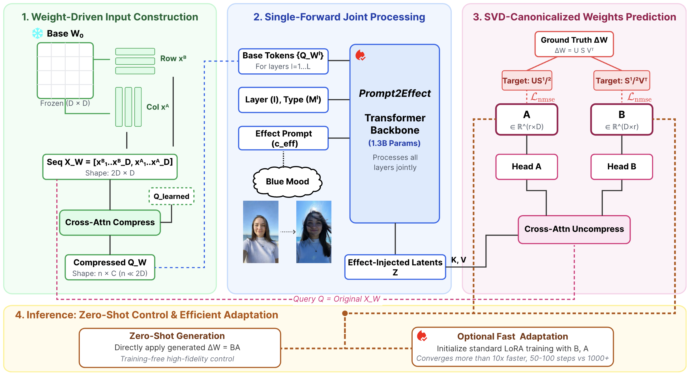
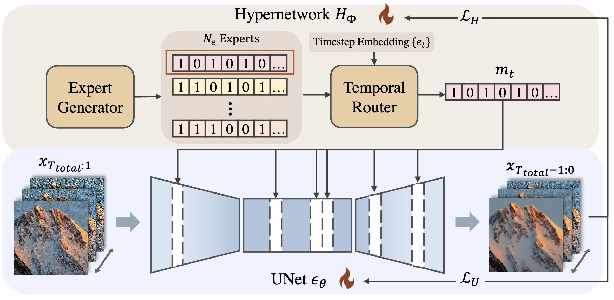
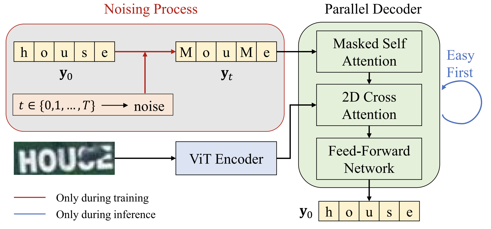
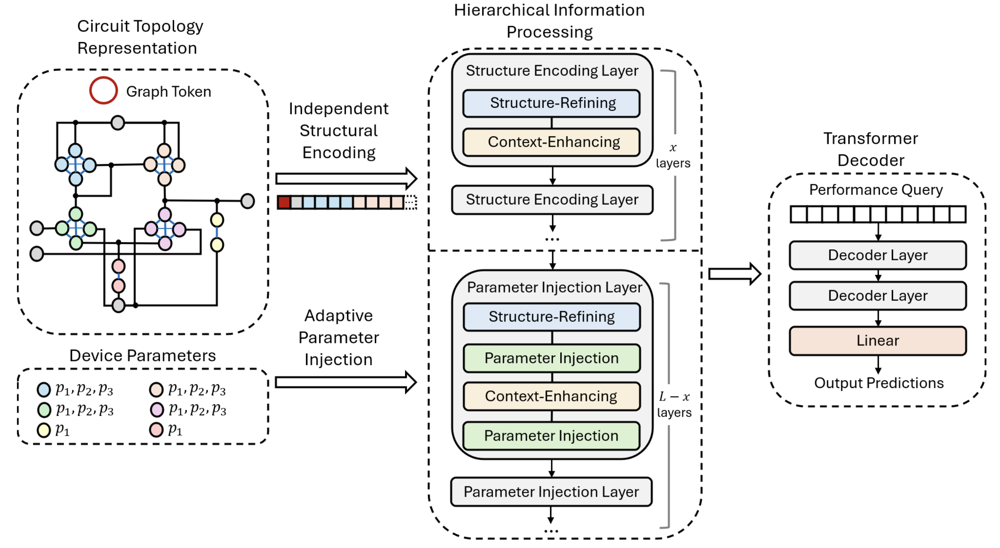
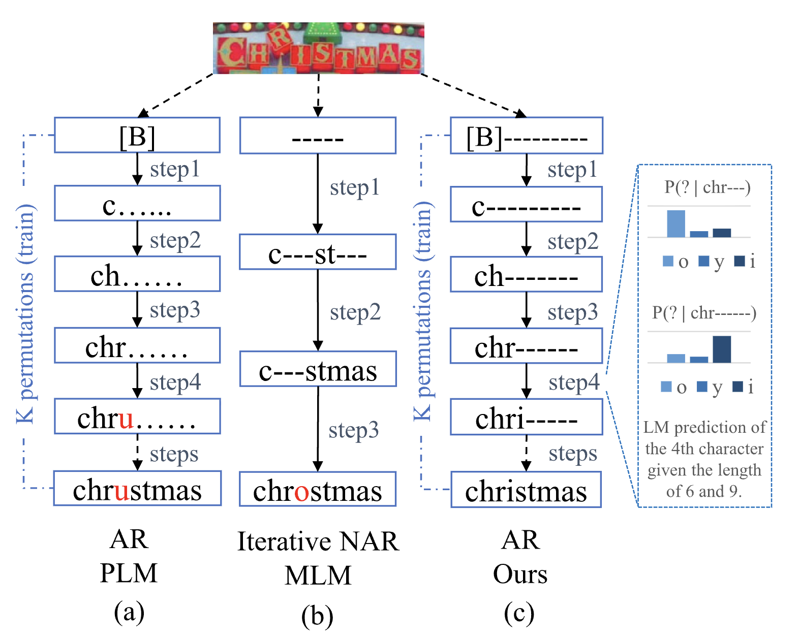
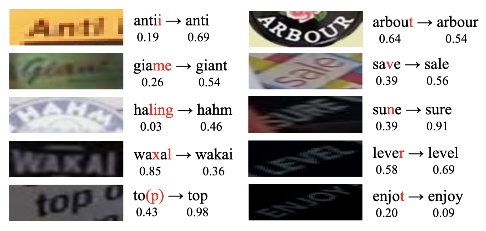
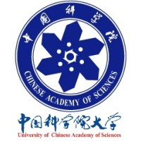

Northeastern University
Ph.D. in Computer Engineering · 2024 – Present
Ph.D. in Computer Engineering · 2024 – Present
Ph.D. Candidate in Computer Engineering
Northeastern University · Boston, MA
I am a Ph.D. candidate in Computer Engineering at Northeastern University, co-advised by Prof. Yanzhi Wang and Prof. Xuan Zhang. My research centers on generative models and multimodal AI — with a focus on video generation, diffusion models, and building efficient, deployable generative systems for real-world scientific and engineering applications.
Previously, I earned my master's degree at the University of Chinese Academy of Sciences, where I worked with Prof. Yu Zhou on visual text analysis and understanding. I hold dual bachelor's degrees in Computer Engineering from the University of Illinois Urbana-Champaign and Zhejiang University.
I'm always glad to connect about research ideas or potential collaborations — feel free to reach out by email.

European Conference on Computer Vision (ECCV), 2026
A training-free framework that specializes image-to-video diffusion models via generated LoRAs for controllable video effects.

Conference on Neural Information Processing Systems (NeurIPS), 2025
Combines all-in-one layer pruning with temporal expert routing to accelerate diffusion-based generation.

International Journal of Computer Vision (IJCV), 2025
An iterative, parallel, and diffusion-based network for accurate and efficient scene text recognition.

International Conference on Computer-Aided Design (ICCAD), 2025
Zero-shot analog circuit performance evaluation using unified transformer embeddings.

IEEE Signal Processing Letters (SPL), 2024
Unifies permuted and masked language modeling within a single decoder for robust scene text recognition.

IEEE International Conference on Acoustics, Speech and Signal Processing (ICASSP), 2024
A regularization-based adversarial training method that improves both the robustness and accuracy of scene text recognition.
Research Intern, Creative Vision, Snap Inc.
Worked on efficient image-to-video effects generation.
Research Intern, Tomorrow Advancing Life (TAL)
Worked on scene text recognition.
